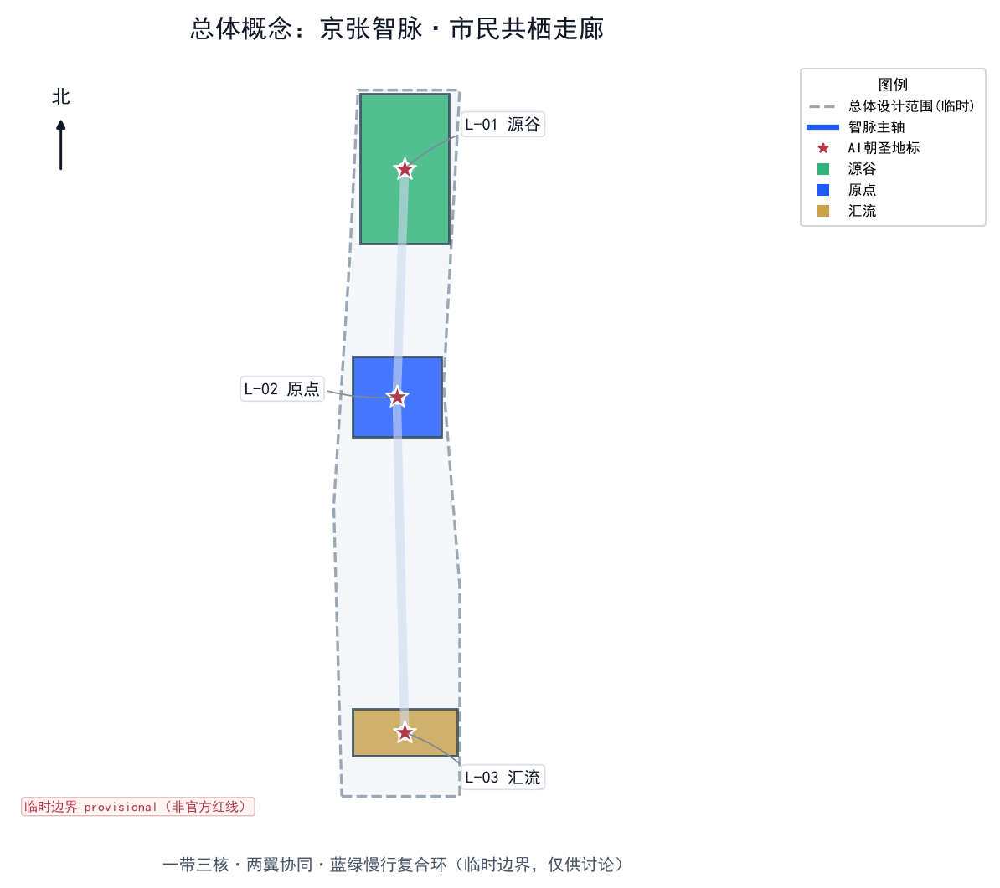
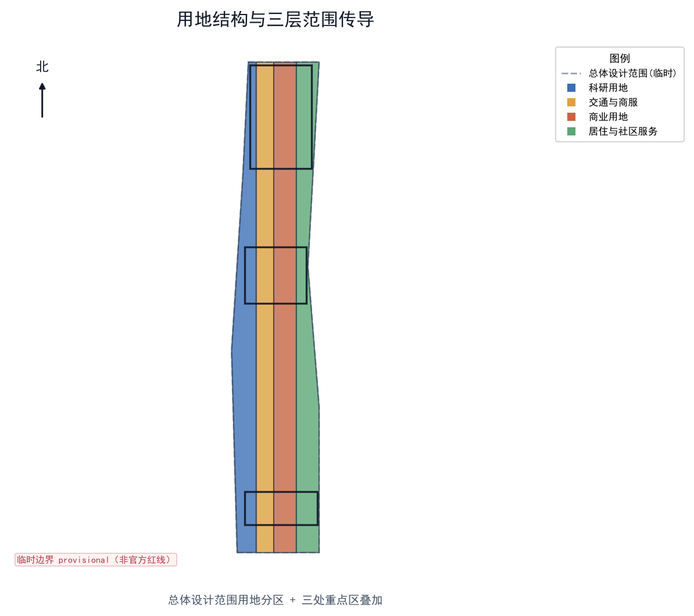
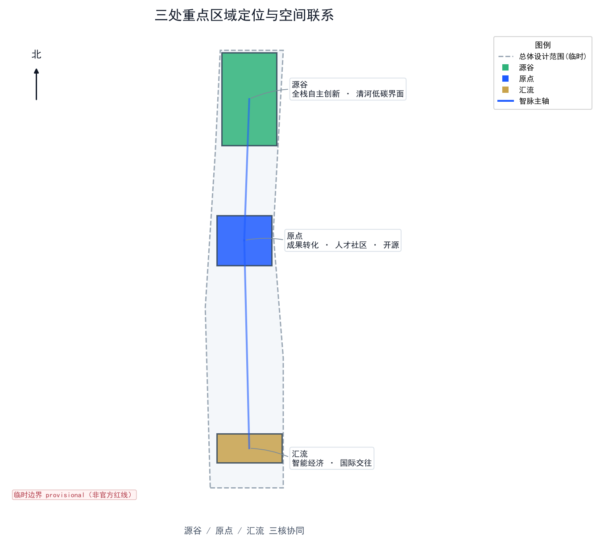
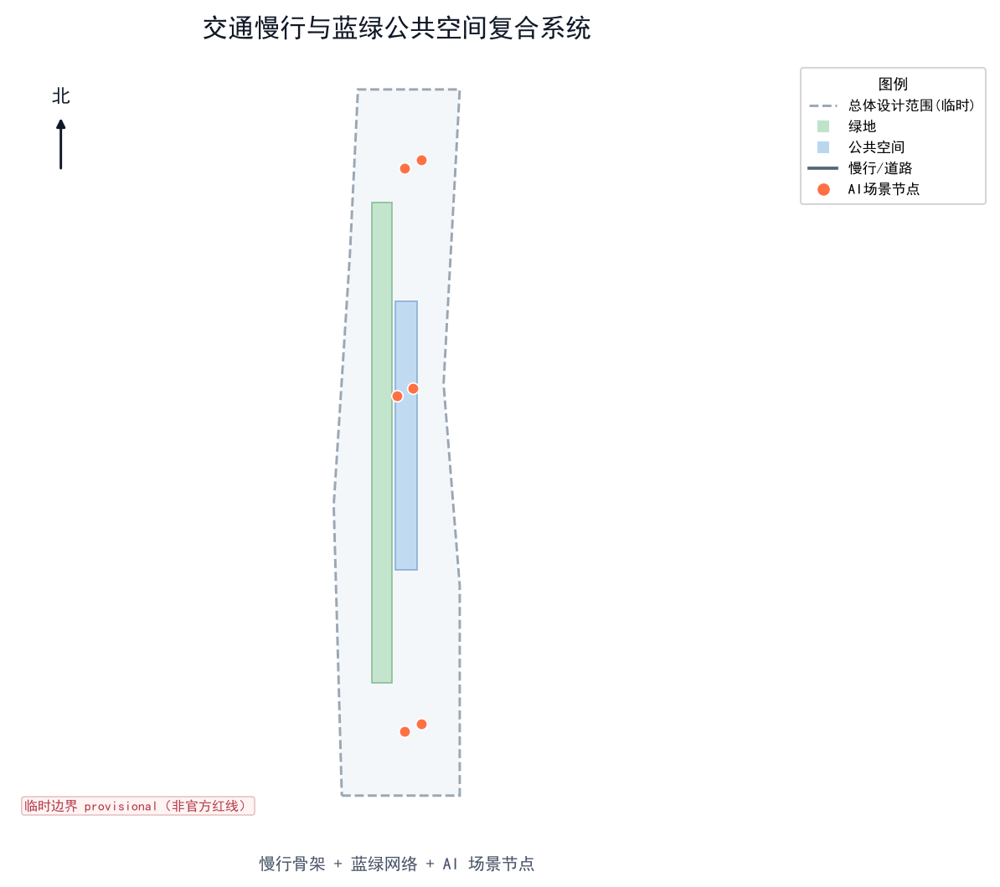
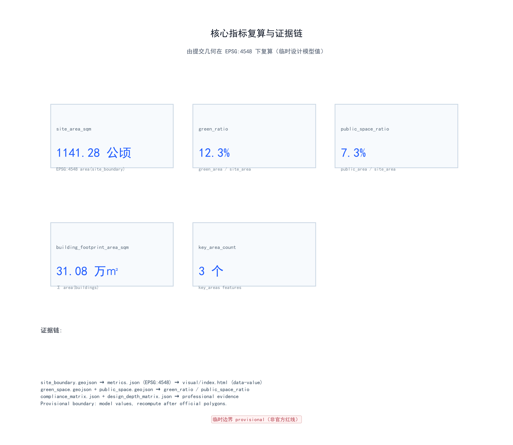

Centennial Jing-Zhang AI Innovation Belt: Jing-Zhang Civic Intelligence Corridor — Overall Urban Design
A civic co-habitation AI vitality corridor organized as 'one belt, three cores, two wings'. Built on provisional boundary and structured self-check; covers official brief 1.3–1.5 and agent.1–agent.6.
Centennial Jing-Zhang AI Innovation Belt: Jing-Zhang Civic Intelligence Corridor — Overall Urban Design
Design Basis and Source List
This formal proposal takes the Pre-qualification Announcement for the International Design Solicitation of the Centennial Jing-Zhang AI Innovation Belt issued by the Haidian Branch of the Beijing Municipal Commission of Planning and Natural Resources as its primary basis, and uses the maintainer-registered provisional rough boundary, key areas, enumerations, metrics, and source清单 in brief/site-package/ as machine-readable evidence Source Source. Before generating the proposal, the AI agent read design_brief.json, allowed_design_space.json, sources.json, enums/, ranges/, schemas/, data/source_registry.json, and data/processed/agent_fact_pack.md, and used project_scope_summary.csv, agent_task_requirements.csv, source_use_matrix.csv, and missing_data_checklist.csv to build a task, scope, source-use, and gap inventory Source. Every design judgment is decomposed into traceable sources, recomputable metrics, verifiable layers, and human-reviewable assumptions. The announcement requires the proposal to reach the urban-design depth of a regulatory plan and the implementation depth of a comprehensive planning scheme, so narrative text cannot replace GeoJSON, the metrics table, the A3 booklet, the A0 boards, and the HTML presentation.
The source registry use boundary is as follows Source: data/source_registry.json registers the use boundaries of public, cleared, and provisional sources; the current registry summary is 7 formal-usable sources, 1 background-only source, and 1 provisional-only source. The agent must not upgrade background_only or provisional_only sources into official boundary, statutory control plan, formal scoring evidence, or government implementation commitments.
data/processed/agent_fact_pack.md is the reading-navigation layer of this proposal, not a new authoritative source Source. Factual judgments must return to the registered raw materials Source Source; the complete source relationships are preserved in sources.json.

Boundary precision statement (must be prominent): The geometry/site_boundary.geojson and geometry/key_areas.geojson in this submission use the provisional rough boundary from brief/site-package/geometry/provisional_boundaries.geojson, marked as provisional_constraint, official_boundary=false Spatial data Spatial data. They may only be used for proposal generation, self-check, visualization, and design discussion; they cannot serve as official redline, approval basis, precise-area basis, or statutory control conclusion. This organizer data gap itself does not block content scoring; after official polygons are obtained, site boundary, key areas, land use, roads, green space, public space, buildings, phasing, and metrics must all be recomputed Depth.
The boundary explanation returns to the overall scope layer and area recomputation Spatial data Metric; the three key areas are verified by an independent layer and a count metric Spatial data Metric. Readers can reach the evidence from the text without first reading a string of machine IDs.
Three-Level Scope Framework
The proposal organizes work along the three levels defined by the announcement: the coordinated research area addresses the AI industry ecosystem, strategic positioning, innovation chain, and future-city form across 43.6 km²; the overall design area addresses the urban-renewal framework, industry spatial layout, transport-municipal support, and urban-character control across 11.4 km² around the Jing-Zhang heritage park (1–2 km); the key detailed-design area addresses the three detailed-design districts of 368.4 ha, requiring explicit function, building scale, retain-renovate-demolish classification, public-space connectivity, and transport organization Source. The three levels are mapped item-by-item in compliance_matrix.json, ensuring every mandatory task of announcement 1.3, 1.4, 1.5 and agent.1–agent.6 has chapter, layer, metric, drawing, and HTML evidence.
The three-level framework is constrained by Depth and Depth; spatial evidence is Spatial data and Spatial data; task basis is Standard; the scope index navigates by the three-level table in project_scope_summary.csv within Source.

Master Concept: Jing-Zhang Civic Intelligence Corridor
The master concept of this proposal is "Jing-Zhang Civic Intelligence Corridor" (Chinese: 京张智脉·市民共栖走廊). The core image translates the Jing-Zhang Railway—the first railway independently designed in modern China—from a historical "artery" into an "intelligence artery" of the AI era: a smart vitality corridor that stitches together historical heritage, university origination, industry transformation, public life, and international exchange Source Depth.
The spatial organization is summarized as "one belt, three cores, two wings, and a blue-green slow-mobility composite ring":
- One belt: the Jing-Zhang heritage park as the historical and public-space spine—not a newly drawn redline, but a working method translating the announcement's three levels.
- Three cores: the Zhongzhiyuan AI Self-Innovation Acceleration Area (full-stack autonomy), the Beijing AI Origin Community (outcome transformation and talent), and the Dazhongsi AI Industry Cluster (intelligent economy and international exchange), corresponding to the three key areas Spatial data Spatial data Spatial data.
- Two wings: the Zhongguancun Technology Service Wing (global factor allocation) and the Xiaoyue River Scenario-Empowerment Wing (AI scenario empowerment and vitality city), supporting the three cores and synergizing with Future Science City, Huairou Science City, and the Beijing–Tianjin–Hebei region Source.
- Composite ring: the coupling of slow mobility, green space, public space, and activity routes forms an everyday experiential network.
| Level | Design question | Proposal answer | Data anchor |
|---|---|---|---|
| Coordinated research area | How to organize AI industry ecosystem and future city form | Build an innovation chain of "university origination—open-source collaboration—enterprise transformation—public experience—international communication" | compliance_matrix.json, standard_matrix.json |
| Overall design area | How to map industry space, urban renewal, transport, municipal, and character | Land use, buildings, roads, green space, public space, and phasing layers jointly express | Spatial data, Spatial data |
| Key detailed-design area | How the three districts reach detailed-design depth | Each proposes positioning, spatial moves, AI scenarios, and implementation dependencies | Spatial data, Spatial data, Spatial data |
Brand Identity and Naming System (agent.1 required)
To serve the overall recognizability and global communication of the "Centennial Jing-Zhang Cultural Belt, Urban AI Living-Experience Belt, AI Integration Innovation Belt," the proposal proposes an extensible naming system and visual-identity direction Source Standard:
- Master brand: Jing-Zhang Pulse (Chinese 京张智脉, subtitle The Civic AI Corridor). "Intelligence artery" echoes both the railway—the artery of modern China's first self-designed line—and the neural network of AI, emphasizing continuity between history and the future.
- Three-core sub-brands: Zhongzhiyuan → Origin Valley (full-stack autonomy origination); Beijing AI Origin Community → The Origin (outcome transformation and talent); Dazhongsi AI Industry Cluster → Confluence (intelligent economy and international exchange).
- Two-wing sub-brands: Zhongguancun Technology Service Wing → Hub Wing; Xiaoyue River Scenario-Empowerment Wing → Ripple Wing.
- Logo direction (concept, not final): a minimalist emblem fusing three elements—rail-profile, neural-network nodes, and green vein; primary colors Intelligence Blue
#1E5BFF, Garden Green#2FB37A, Capital Gold#C8A24B. The mark is a self-drawn vector and uses no copyrighted or trademarked graphics; final deployment requires professional brand and clearance review. - Signage and symbols: reuse the railway "milestone" vocabulary (0-km origin monument, kilometer markers) with neural-network node graphics to form a unified spatial narrative and recognizable interface Depth.
The naming system does not replace statutory planning names; it is an open-co-creation brand suggestion for professional teams to deepen Source.
Coordinated Research Area: Industry and Future City Research
The core task of the coordinated research area is to build a world-class AI innovation ecosystem Source. The proposal reviews Haidian's universities and research institutes, leading enterprises, computing/algorithm/data factors, incubation platforms, listed companies, unicorns, and technology-service resources, and proposes a four-chain spatial synergy framework of "AI innovation chain—industry chain—talent chain—city-service chain." The agent open call also requires responding to the "five functions" (full-stack AI autonomy system, world-class AI innovation ecosystem, AI+ scenario empowerment paradigm, intelligent AI vitality city, global discourse power in AI governance) and the "three areas and two wings" synergy Source Standard.
Global AI Innovation Ecosystem Cases (agent.2 required: 5–8)
The proposal draws on 6 publicly verifiable global AI innovation ecosystem cases and extracts transferable mechanisms for Jing-Zhang Source Depth:
| ID | Case | Core mechanism | Transferable lesson for Jing-Zhang |
|---|---|---|---|
| C-01 | Toronto–Montreal AI Corridor (Vector Institute + Mila + MaRS) | University basic-research origination + independent institutes + transformation platforms ("research–translation" two wheels) | The Origin Community can replicate the near-campus "university—institute—incubation" chain |
| C-02 | Shenzhen Nanshan AI Cluster (Tencent, DJI, Pengcheng Lab) | Leading private enterprises + major S&T infrastructure (compute) + hardware industry chain | Zhongzhiyuan needs shared compute and test facilities, not just招商 buildings |
| C-03 | Hangzhou City West Science-Tech Corridor (Zhejiang Lab, Alibaba DAMO, Future Sci-Tech City) | National lab + private research institutes + talent community integration | Reduce talent migration cost via "lab—talent zone—living amenities" |
| C-04 | Singapore AI Singapore / Punggol Digital District | National AI program + smart district + open datasets | Drive scenario-open operations with official open datasets |
| C-05 | Paris Station F + Île-de-France AI ecosystem | Flagship incubator + startup density + international talent visa | Dazhongsi International Roadshow Hall hosts international exchange and attraction |
| C-06 | Eindhoven Brainport / High Tech Campus | Tight industry–academia coupling + hardware innovation cluster + pilot lines | Lay out pilot and hardware-validation scenarios in Jing-Zhang to bridge "prototype to product" |
All cases come from public sources; no official cooperation with Jing-Zhang is claimed. Their lessons are conceptual suggestions for professional teams to deepen Depth Source.
Case Sources, Fact Scope, and Reuse Boundaries (Item-by-Item Verification)
To ensure case facts are verifiable and reuse boundaries are clear, the table below lists public sources, fact scope, acquisition time, and reuse boundaries for C-01–C-06; the source ID is noted in the last column. All cases are drawn from public materials; no official cooperation, affiliation, or data exchange with Jing-Zhang is claimed. Institution names are used only to illustrate mechanisms and do not constitute recruitment or implementation commitments.
| ID | Source (publicly verifiable) | Fact scope (verifiable content) | Acquired | Reuse boundary | Source ID |
|---|---|---|---|---|---|
| C-01 | Vector Institute (vectorinstitute.ai), Mila (mila.quebec), MaRS Discovery District (marsdd.com) public sites and annual reports | Vector Institute is an independent non-profit AI institute founded in Toronto in 2017; Mila is a Montreal ML research institute; MaRS is a Toronto innovation hub — all publicly documented | 2026-08 | Mechanism analogy of "university—institute—incubation" only; no claimed official cooperation | Source |
| C-02 | Shenzhen Nanshan District government public materials, Pengcheng Lab (pcnicl.ac.cn), Tencent and DJI public materials | Nanshan clusters leading private enterprises; Pengcheng Lab is a national lab with compute facilities — public industry-geography facts | 2026-08 | Mechanism analogy of "shared compute + hardware chain" only | Source |
| C-03 | Zhejiang Lab, Alibaba DAMO, Hangzhou Future Sci-Tech City public materials | National lab + private research institutes + talent-community integration is a public planning fact | 2026-08 | Mechanism analogy of "lab—talent zone—amenities" only | Source |
| C-04 | AI Singapore (ai.gov.sg), Punggol Digital District public materials | Singapore's national AI program, smart district, and open datasets are public policy facts | 2026-08 | Mechanism analogy of "open datasets drive scenario operations" only | Source |
| C-05 | Station F (stationf.co), Île-de-France Region public materials | Station F is a large Paris startup incubator (public fact); international talent visa is French public policy | 2026-08 | Mechanism analogy of "international exchange and attraction" only | Source |
| C-06 | Brainport Eindhoven (brainport.nl), High Tech Campus Eindhoven public materials | Tight industry–academia coupling, hardware innovation cluster, and pilot lines are public regional-innovation facts | 2026-08 | Mechanism analogy of "pilot and hardware validation" only | Source |
Regional Innovation Synergy (Three Cores / Two Wings × Regional Innovation Network)
Building on the "one belt, three cores, two wings" structure, this section clarifies the differentiated roles, factor flows, and collaboration interfaces with surrounding regional-innovation nodes. Except for the internal relationships among the three cores and two wings, all cross-node collaborations listed below are conceptual suggestions and have not been formally confirmed Source.
| Node | Differentiated role | Factor flow (in / out) | Collaboration interface | Cooperation status |
|---|---|---|---|---|
| Zhongzhiyuan · Origin Valley (one of the three cores) | Full-stack autonomous origination and acceleration | In: university outputs, open-source models; Out: autonomous tech, standards | Own key area | Internal to proposal |
| Beijing AI Origin Community · The Origin (one of the three cores) | Result translation and talent community | In: research outputs, talent; Out: incubated firms, community contributions | Own key area | Internal to proposal |
| Dazhongsi · Confluence (one of the three cores) | Intelligent-economy international exchange | In: international resources, capital; Out: roadshows, brand | Own key area | Internal to proposal |
| Zhongguancun Tech-Service Wing · Hub | Global factor allocation | In/Out: capital, services, global network | Zhongguancun innovation network | Conceptual |
| Xiaoyue River Scenario-Empowerment Wing · Ripple | AI scenario empowerment and vitality city | In/Out: scenarios, data, public experience | Xiaoyue River public space | Conceptual |
| North-Latitude Community (northern community belt of the corridor, incl. Qinghe–Beishatan–Xisanqi talent communities; conceptual node) | Talent residency and near-campus living amenities | In: residency and living services; Out: talent retention, near-campus translation | Community–campus slow-traffic stitching | Conceptual |
| Future Science City (Changping) | Major science facilities; energy and advanced-manufacturing research | In: application scenarios; Out: facilities, research infrastructure | Scenario-demand matching | Conceptual |
| Huairou Science City | Comprehensive national science center and basic research | In: AI methods; Out: basic-research outputs | Basic-research collaboration | Conceptual |
| Economic-Technological Development Area (Yizhuang) | Intelligent manufacturing and industry-translation capacity | In: AI technology; Out: manufacturing capacity, products | Pilot-to-mass-production interface | Conceptual |
| Beijing–Tianjin–Hebei (regional synergy) | Regional industry chain and scenario market | In/Out: industry chain, scenarios, market | Regional-synergy interface | Conceptual |
Note: Except for the internal relationships among the three cores and two wings, all "cooperation status" entries above are conceptual suggestions and do not represent signed agreements or official confirmation; concrete collaboration requires separate validation at the formal planning and investment-promotion stages Source.
Future-city-form research answers how AI changes work, life, socializing, learning, transport, and public services. The proposal grounds AI transport systems, continuous green space, innovation-service facilities, and an international living-working atmosphere into locatable functional zones, nodes, corridors, and scenarios, rather than vaguely describing a technology vision Depth.
Overall Design Area: Urban Renewal and Regulatory-Plan-Level Urban Design
The overall design area must reach regulatory-plan-level urban-design depth Standard. The proposal proposes the overall urban-renewal spatial structure, inefficient-space identification, renewal project list, implementation-policy suggestions, industry-function proportions, spatial organization pattern, total building scale, and comprehensive carrying-capacity assessment Depth Depth.
This section decomposes regulatory-plan-depth content into reviewable objects: Spatial data expresses land-use structure, Spatial data expresses building footprints, Spatial data expresses transport organization, and Metric verifies building-footprint area Depth.
The overall design also supports transport, rail, municipal, and public-service facilities Depth Depth. Where official control conditions for building height, development intensity, road redlines, setbacks, and facility standards are absent, they are written as "pending confirmation of official regulatory conditions," never impersonating approved indicators with agent-inferred values Depth.
Detailed Design of Key Areas
Detailed design of key areas is mandatory; the three districts must appear in geometry/key_areas.geojson Spatial data Spatial data Spatial data and are checked by Depth for comprehensive-implementation-scheme depth. Describing only "build a demonstration zone" without function, building, transport, public space, and implementation-project evidence is considered incomplete.

| Key district | Sub-brand | Positioning | Spatial moves | AI industry & operation scenarios | Evidence |
|---|---|---|---|---|---|
| Zhongzhiyuan AI Self-Innovation Acceleration Area | Origin Valley | Garden-type full-stack autonomy block | Strengthen Qinghe interface, industry showcase, low-carbon innovation exchange, external transport; use green space for open testing and standards-governance showcase | Autonomous-model testing, standards workshops, safety-governance showcase, low-carbon compute experience | Spatial data, Depth |
| Beijing AI Origin Community | The Origin | Near-campus outcome-transformation and talent community | Organize campus–park–block slow-mobility stitching; add outcome release, talent services, living amenities, open-source collaboration space | Open-source community, outcome release, talent-zone services, near-campus incubation | Spatial data, Source |
| Dazhongsi AI Industry Cluster | Confluence | Urban intelligent-economy and international-exchange block | Around Dazhongsi station integration, four-quadrant walk connectivity, commercial services, key-enterprise public-environment renewal | Agent & intelligent-terminal showcase, content consumption, data factors, international roadshow | Spatial data, Metric |
All three key districts are expressed as "conceptual suggestion / reference scheme / available for professional teams to deepen," and do not constitute government-approved conclusions Source.
AI Pilgrimage Landmarks and Honor-Display System (agent.4 required: ≥3)
To turn the "global AI innovation pilgrimage destination" goal into experiential, communicable spatial objects, the proposal proposes 3 AI pilgrimage landmarks and an honor-display system Source Depth:
| ID | Landmark | Location | Content | Honor/display mechanism |
|---|---|---|---|---|
| L-01 | Jing-Zhang Zero-Kilometer AI Origin Monument | Tsinghua Garden Station ruins (north end of Origin Community) | Marks the belt's start with railway "0 km" vocabulary; bilingual interpretation and check-in point | Annual AI Contribution Ranking released here, recording open-source and individual contributions |
| L-02 | Open-Source Contribution Wall | Beijing AI Origin Community | Public code wall with rolling contributor-name/project display | Cumulative community contributions in real time; supports "Pilgrimage Passport" stamping |
| L-03 | Global AI Innovation Index Beacon | Dazhongsi AI Industry Cluster | Public data installation visualizing open-innovation metrics | Annual metric release and city-level innovation narrative carrier |
Honor-display system: ① Annual AI Contribution Ranking (enterprises, teams, individuals); ② Pilgrimage Passport, stamping at L-01–L-03 and key scenario nodes, linking the "heritage culture—open-source community—industry showcase—international roadshow" experience route; ③ a public-space component library (seating, signage, lighting, panels) in a unified style for professional teams to deepen as needed Depth. All landmarks and displays are conceptual suggestions and do not involve unauthorized modification of heritage or tenure spaces Depth.
AI Innovation Ecosystem, Personas, and AI+ Scenarios
The proposal builds spatial-demand personas for AI talent and enterprises, covering R&D office, open-source collaboration, outcome release, enterprise services, talent living, social learning, consumption life, sports leisure, and international exchange Depth. AI+ scenarios follow the announcement's directions—transport, services, consumption, healthcare, education, law, living services—forming industry-development scenarios and AI-empowered urban-function scenarios; each scenario states service objects, spatial location, data source, privacy boundary, human-review mechanism, and operating entity Source Depth.
AI scenarios land on spatial and governance boundaries: public-space scenarios reference Spatial data, slow-mobility and transport scenarios reference Spatial data, open-space scenarios reference Spatial data and Metric, Metric Depth.
User Personas (agent.3 required: ≥5)
| Persona | Typical needs | Spatial response | Privacy & human-review boundary |
|---|---|---|---|
| Open-source developer | Release, collaborate, test, community reputation | Origin Community open-release hall, public code wall, night collaboration space | No personal behavior tracking; activity data aggregated only |
| Startup team | Low-cost office, compute access, product testbed | Zhongzhiyuan shared test field, edge-compute service point, standards-governance consulting | Compute and data services require separate authorization |
| Leading-enterprise visitor | Showcase, business, international reception, recruitment | Dazhongsi international roadshow hall, station transfer, key-enterprise public space | Enterprise logos and cases must be cleared |
| Nearby resident | Commute, leisure, community service, low-disturbance renewal | Jing-Zhang heritage-park slow ring, embedded community services, graded night lighting and activities | No resident profiling for commercial recommendation |
| University faculty & students | Outcome transformation, cross-campus collaboration, daily slow mobility | Campus–park slow stitching, transformation station, AI-education experience point | Campus data and research results require authorization |
| International visitor / pilgrim | Visit, check-in, learn, communicate | AI pilgrimage landmarks, pilgrimage passport, bilingual signage | Visitor data anonymized; only for flow statistics |
AI Scenario Cards (agent.3 required: ≥10)
| ID | Scenario card | Spatial carrier | Description | Category |
|---|---|---|---|---|
| S-01 | Open-Source Release Hall | Beijing AI Origin Community | For universities, open-source communities, and startups: outcome release, code-contribution display, small roadshow space | Experience scenario |
| S-02 | Safety-Governance Sandbox | Zhongzhiyuan (Origin Valley) | Translate standards formulation, safety evaluation, model red-teaming into visitable, bookable, supervised showcase and collaboration nodes | Industry test/validation scenario |
| S-03 | Edge-Compute & Robotics Validation Field | Overall-design-area node (Origin Community) | Pilot/validation for edge intelligence and robotics, combined with public services and low-carbon energy strategy as a new-infrastructure prototype | Industry test/validation scenario |
| S-04 | AI Slow-Mobility Navigation | Jing-Zhang heritage-park vitality belt | Explainable signage and low-intrusion sensing to identify slow-mobility breakpoints, crowding nodes, and accessibility needs | Experience scenario |
| S-05 | Dazhongsi International Roadshow Hall | Dazhongsi AI Industry Cluster | Showcase, negotiation, media release, and international exchange for agents, intelligent terminals, and content-consumption enterprises | Experience scenario |
| S-06 | Qinghe Low-Carbon Innovation Corridor | Zhongzhiyuan Qinghe interface | Combine green space, stormwater, walking/cycling, and AI showcase as a park living room | Experience scenario |
| S-07 | Near-Campus Outcome-Transformation Street | Beijing AI Origin Community | For university outcome transformation: incubation, showcase, legal, IP, and investment-financing services | Experience scenario |
| S-08 | Data-Factor Reception Hall | Dazhongsi district | Compliant, authorized, auditable urban-service interface showcasing data-factor and digital-asset circulation | Experience scenario |
| S-09 | AI Living-Services Model Street | Community–commerce interface | Land AI+ scenarios of healthcare, education, law, living services into operable small-scale block space | Experience scenario |
| S-10 | Global AI Week Route | Belt public-space system | Walkable, communicable experience route from heritage culture, open-source community, industry showcase to international roadshow | Experience scenario |
| S-11 | AI Medical-Imaging Assisted Validation Clinic | Community public-service node | Physician-reviewed medical-imaging assistance validation scenario; research/experience only, no independent diagnostic conclusion | Industry test/validation scenario |
| S-12 | Smart Accessibility Companion | Rail stations and slow-mobility system | Explainable routing and facility guidance for elderly, children, and persons with disabilities, with full human intervention | Experience scenario |
Among these, S-02, S-03, S-11 are explicit industry test/validation scenarios (≥3), all expressed as "test/validation/experience" rather than approved operation; the rest are experiential, showcaseable, promotable AI city scenarios Depth Source.
The agent's AI-governance suggestions follow data-minimization, open-source, explainability, and human-review principles. City agents may assist in identifying slow-mobility breakpoints, public-space heat, facility maintenance, enterprise-service needs, and activity-safety risks, but cannot replace planning approval, cannot output unauthorized personal profiles, and cannot claim official implementation commitments Depth.
Land Use, Building Scale, and Retain-Renovate-Demolish Strategy
The land-use scheme expresses a complete, closed, seamless land-use partition based on public standards such as territorial spatial survey, planning, and use-control classification Standard. The building scheme distinguishes retained, renovated, renewed, newly built, or pending objects, clarifying building footprint, function, scale, character, roof, massing, and height-control suggestion levels Depth Depth.
Land-use classification follows Standard; building height, massing, interface, and character control are managed by Depth; retain-renovate-demolish method is managed by Depth. The main evidence for land use and buildings is Spatial data, Spatial data, and Metric.
Building-scale and intensity metrics must be consistent with metrics.json and the layers. Where total building scale, FAR, building height, building density, green ratio, setbacks, and building-control lines lack official conditions, they uniformly use status=unknown with reason / assumptions stating pending conditions, current assumptions, and recomputation path after official data arrives—never fabricating precision with fixed values Depth.
Transport, Rail, Municipal Infrastructure, and Public Services
The transport scheme responds to the announcement's requirements for rail-station integration, road micro-circulation, slow-mobility breakpoints, external transport, parking, non-motorized parking, and green-transport systems Depth. It covers North 5th Ring Road, the Jing-Zhang heritage-park cross-ring node, Wudaokou, Qinghua East Road West Exit, Dazhongsi Station, and key-enterprise transport connections. Road and slow-mobility layers stay within the submitted boundary and cross-check with public space, green space, industry nodes, and key districts; if the boundary is provisional, transport conclusions are temporary design discussion only Spatial data.

Transport and municipal professional depth are constrained by Depth and Depth; layer evidence references Spatial data, Spatial data, and Depth. Where road redlines, pipelines, fire protection, and municipal conditions are missing, they are stated as pending in assumptions rather than written as approved conditions Depth.
Municipal and public-service facilities cover AI industry-service facilities, innovation-service platforms, talent-living-service facilities, new infrastructure, distributed energy, edge compute, and traditional municipal facilities, stating facility standards, spatial layout, service radius, operating model, and phasing logic Depth.
Blue-Green Network, Public Space, and Urban Character
The blue-green scheme takes the Jing-Zhang heritage-park vitality belt as its skeleton, coordinating Qinghe, Xiaoyue River, surrounding universities, enterprises, and community travel needs, proposing north–south connected, east–west linked walkway, cycleway, and green-space systems Depth. It identifies slow-mobility breakpoints, over-ring nodes, south and north landscape nodes of the park, proposing parking, sports, innovation exchange, tech testing, application showcase, and public-service composite-use strategies Spatial data Spatial data.
Blue-green public space is jointly checked by the design-depth item and the green-space and public-space layers Depth Spatial data Spatial data; green and public-space ratios are explained in the text with full recomputation in metrics.json Metric Metric; the coordination of urban character, public space, and building control returns to the professional standard matrix Standard.
Urban character fuses Jing-Zhang railway history, Zhongguancun innovation culture, and AI innovation culture, using cultural resources such as the Tsinghua Garden Station and Beijing Film Academy to propose city tone, building character, roof form, massing, interface, and public-art guidance Depth Source. All brands, fonts, images, portraits, and enterprise logos must have cleared sources; character control distinguishes official control, design suggestion, and pending conditions, and strictly forbids fabricating precise control lines without heritage or regulatory basis Depth.
Centennial Jing-Zhang—Zhongguancun—AI New-Culture Fusion Narrative (agent.5 required)
The proposal constructs a "three-era spatial overlay" cultural narrative, translating the site's thread from railway heritage and innovation blocks to an intelligent future into a readable spatial story-line Source Depth:
1. Jing-Zhang railway history (1909, Zhan Tianyou): starting from the Tsinghua Garden Station, linear railway heritage, and the "self-built" spirit, preserving and activating the heritage interface as the historical root. 2. Zhongguancun innovation culture (1980s Electronics Street to present): continuing the "dare-to-try, industry–academia integration" innovation gene into the AI era, with the Origin Community carrying the outcome-transformation narrative. 3. AI new culture: with openness, collaboration, trustworthiness, and benevolence as value cores, writing algorithmic ethics, open-source contribution, and public welfare into spatial symbols and activity rituals.
The spatial culture system arranges "milestone—node—plaza" three-level narrative carriers along the corridor: milestones mark history and mileage, nodes carry scenario experience, plazas carry public rituals and annual activities; signage, identity, and symbol systems uniformly use self-drawn railway vocabulary + neural-network graphics, avoiding confusion with the belt's overall logo system Standard. International-communication narrative is carried by a bilingual portal, global media partners, and the pilgrimage passport, distinguishing "submitted / reviewed / selected / implemented" statuses and never describing a concept as approved or built Source.
Renewal Projects, Implementation Policy, and Phasing
The implementation scheme forms a reviewable renewal project list stating project location, type, function, responsible entity, dependencies, implementation phase, risks, and assessment metrics Depth. Policy suggestions cover urban-renewal coordinated implementation, spatial supply, operating mechanisms, industry services, public participation, data governance, and property-rights coordination Depth. geometry/phasing.geojson expresses phasing scope; Spatial data is the phasing spatial evidence.
| ID | Project | Type | Main dependencies | Evidence |
|---|---|---|---|---|
| JZ-01 | Jing-Zhang heritage-park slow-mobility breakpoint stitching | Public space / transport | Road redline, under-bridge space, transport-organization review | Spatial data |
| JZ-02 | Zhongzhiyuan Qinghe innovation interface | Blue-green / industry showcase | River blue line, ecology and flood conditions | Spatial data |
| JZ-03 | Origin Community near-campus outcome-transformation street | Urban renewal / industry service | Campus boundary, tenure, ground-floor uses | Spatial data |
| JZ-04 | Dazhongsi Station four-quadrant walk connectivity | Rail integration / slow mobility | Rail station, road intersections, municipal pipelines | Spatial data |
| JZ-05 | AI public services and edge-compute nodes | New infrastructure / public service | Energy, compute, security, operating entity | Depth |
| JZ-06 | Global AI Week public route | Operation / brand | Public-space permit, activity safety, copyright clearance | Spatial data |
Phasing distinguishes the "100-day solicitation design cycle" from the "urban-renewal implementation phasing": near-term pilots (light facilities, operational activities, service platforms first), mid-term renewal (after regulatory/municipal/transport/tenure confirmation), long-term governance (annual activities, community operation, brand-asset accumulation) Depth.
Global AI Innovation Activity System and Long-Term Operation (agent.6 required)
To turn "global AI innovation activity system and long-term operation" from slogan into mechanism, the proposal proposes operable annual activity systems, developer-community operation, scenario-open operation, and international-communication attraction-conversion paths Source Depth:
- Annual activity system: ① Global AI Week (autumn, linking L-01–L-03 and key scenarios); ② Jing-Zhang Open-Source Hackathon (quarterly); ③ AI Pilgrimage Route Open Day (monthly); ④ Annual AI Contribution Ranking release (year-end, at L-01 Origin Monument).
- Brand and communication visual system: reuse the "Jing-Zhang Pulse" master brand and three-core two-wing sub-brands, unifying activity key visuals, bilingual materials, and social templates; all assets self-drawn or cleared, distinguishing submitted/reviewed/selected/implemented statuses Standard.
- Developer-community operation: establish an online+offline "Jing-Zhang AI Developers Guild," accumulating long-term community assets via contribution points, open-source rankings, and pilgrimage passport; community governance follows data-minimization and human-review principles.
- AI scenario-open operation: build a "City AI Scenario-Open Platform" where enterprises/teams can apply to deploy validation-type scenarios in designated public spaces (including test/validation scenarios S-02/S-03/S-11), subject to compliance, authorization, and safety review, and only as test/experience rather than approved operation Depth.
- Public experience and landmark operation: organize walkable, communicable experience routes with L-01–L-03 and the Jing-Zhang heritage-park vitality belt, with bilingual signage and accessibility services.
- International communication and attraction-conversion: a bilingual portal + global media partners + pilgrimage passport carry international communication; build a "talent→enterprise→capital→scenario" conversion loop, clarifying each actor's follow-up conversion path and responsibility boundary, never writing attraction, policy, or funding as certain commitments Depth.
All activities and operations above are conceptual suggestions / reference schemes and do not constitute confirmed government arrangements; actual implementation requires professional operating teams and relevant department confirmation Source.
Metrics, Area Recalculation, and Compliance Matrix
The metrics system includes overall-design-area area, key-area area, green and public-space ratios, building footprint, renewal-project count, AI-scenario nodes, slow-mobility connectivity, industry-space indicators, talent-service indicators, and self-check status Depth. All known metrics are recomputable from GeoJSON or trusted sources; unknown metrics state reasons and formal-submission preconditions. The results of scripts/spatial_review.py and scripts/visual_review.py are important evidence for the formal self-check Metric Metric Metric.

The compliance matrix is the master file of task responsiveness. Every announcement task and agent_taskbook task maps to report chapter, layer, metric, drawing, HTML page, source, assumption, and self-check item Depth. Failure to cover any mandatory task of announcement 1.3, 1.4, 1.5, or agent.1–agent.6 disqualifies the proposal from formal professional scoring.
Metrics are divided into three classes: the first class is recomputable directly from submitted geometry (boundary area, green ratio, public-space ratio, building footprint, phasing area); the second requires official regulatory or taskbook-attachment support (FAR, building height, building density, setbacks, road redlines, facility standards); the third requires continuous calibration by operational or industry data (AI innovation index, talent density, industry-service satisfaction, slow-mobility accessibility, activity participation, scenario usage frequency). The three classes enter metrics.json, assumptions.json, and compliance_matrix.json respectively, avoiding mistaking operational vision for approved planning conditions Depth.
Risk, Copyright, and Compliance
Boundary and data boundaries: All spatial-landing suggestions are expressed as "conceptual suggestion / reference scheme / available for professional teams to deepen," do not replace formal planning, and do not constitute government-approved conclusions Source. No fabrication of enterprise lists, investment amounts, output values, or fiscal commitments; no writing of internal data or unverified policies as facts; no writing of industry attraction, funding support, or policy arrangements as confirmed matters Depth.
Public-compliance: All images, drawings, icons, data, and code assets state source, license, and authorization status in sources.json and report/copyright_statement.md. Brands, fonts, images, portraits, and enterprise logos all use cleared or self-drawn resources; no unauthorized trademarks, fonts, paper images, or copyrighted materials are used Depth.
Privacy and human review: City agents only assist in identifying public-space and facility issues, output no unauthorized personal profiles, and claim no official implementation commitments; personal data is anonymized and aggregated with a human-review entry retained Depth.
Pending data (data gaps): The official boundary, key area, regulatory plan, roads, parcels, buildings, municipal, heritage, and public-service gaps listed in missing_data_checklist.csv must enter assumptions.json, self-check, and the risk section; any conclusion lacking official regulatory, road-redline, tenure, municipal, fire-protection, or heritage conditions is downgraded to pending Depth Depth.
This proposal does not claim official approval, approved regulatory plan, final land tenure, final construction scale, or guaranteed implementation. The AI agent is responsible for facts, sources, copyright, spatial data, metrics, and expression; maintainers and professional reviewers may request revision or rejection based on self-check results, spatial review, and the compliance matrix.
References
- brief/public-brief.md
- brief/site-package/design_brief.json
- brief/site-package/allowed_design_space.json
- brief/site-package/enums/
- brief/site-package/ranges/planning_limits.json
- data/processed/agent_fact_pack.md
- data/processed/project_scope_summary.csv
- data/processed/agent_task_requirements.csv
- data/processed/source_use_matrix.csv
- data/processed/missing_data_checklist.csv
- Complete machine index: see
sources.json,metrics.json,compliance_matrix.json,standard_matrix.json, anddesign_depth_matrix.json - The bibliography entries here are registered by the site package; full provenance and licenses are in the structured source list Source